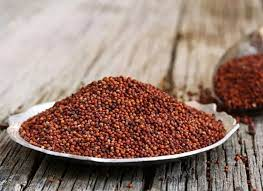
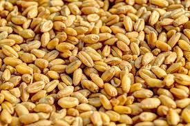
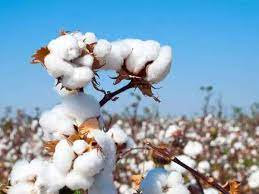
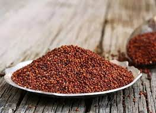
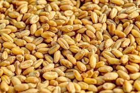
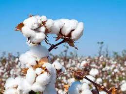

Agri:Gold of Living
Your One-Stop Crop Recommendation Platform. Agri is a comprehensive website that provides farmers with accurate crop recommendations based on factors such as soil quality, climate conditions. Our integrated weather forecast feature keeps you informed about the latest weather patterns, enabling you to plan your agricultural activities effectively. Whether you're a seasoned farmer or a beginner, Agri offers a wealth of resources and expert advice to help you maximize crop yield and optimize farming practices. For further assistance or inquiries, support team is just a click away, ready to address your concerns and provide personalized assistance. Join Agri today and revolutionize your farming experience with data-driven insights and reliable recommendations.
 





- Ensure proper soil management by conducting soil tests to assess nutrient levels and pH. Maintain optimal soil fertility by adding organic matter, using appropriate fertilizers, and practicing crop rotation.
- Implement efficient irrigation systems to provide crops with adequate water. Avoid over- or under-watering by monitoring soil moisture levels and adjusting irrigation accordingly
- Implement integrated pest management (IPM) practices to control pests and diseases effectively. This includes using natural predators, resistant crop varieties, and judicious use of pesticides.
- Protect crops from extreme weather conditions such as frost, heatwaves, and hailstorms using appropriate protective measures such as shelters, covers, and irrigation.
- Follow recommended planting practices, including appropriate seed selection, proper seed spacing, and planting at the right depth and time.